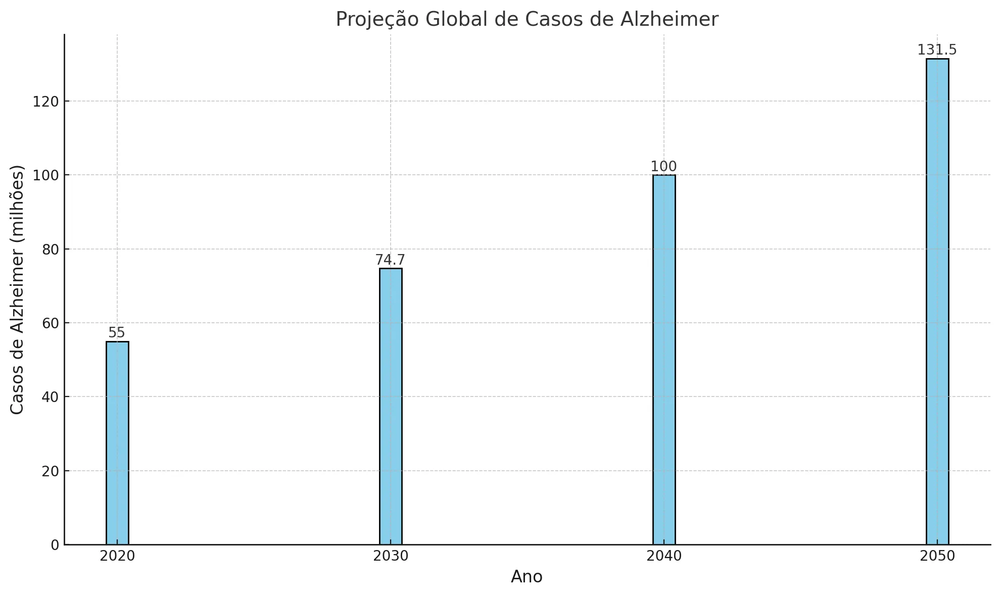

Sobre a doença de Alzheimer:
É uma doênça neurodegenerativa que atinge príncipalmente pessoas com mais de 65 anos. É responsável por quase 70% dos casos de demência, manifestando-se de forma lenta e vai-se agravando ao longo do tempo. Em determinados estágios da doênça, os sintomas visíveis podem variar como:
- Perda de memória: esquecer de eventos recentes como nomes ou informações, são os primeiros sinais
- Falhas na linguagem: dificuldades para encontrar palavras certas para se expressar
- Desorientação: problemas de se localizar em ambientes familiares
- Problemas com tarefas cotidianas: dificuldades em realizar tarefas que antes eram fáceis, como cozinhar ou pagar contas
- Mudanças de humor: irritabilidade, ansiedade, depressão ou apatia
Proposta de um suporte virtual
Nosso ideia inicial é fornecer um site/aplicativo com o intuito de ajudar tanto o cuidador quanto o portador da doênça de alzheimer.
- Agendamento médico: Agendar consultas médicas, tanto particulares quanto públicas, perto da casa do paciente
- Métodos de estímulos cognitivos: A pessoa que estimula seu cérebro demonstra menores riscos de desenvolver a doença
- Área para cuidadores: Ajuda especializada àqueles que têm a função de ajudar pessoas com Alzheimer
- Lembrete de tarefas diárias: Para aqueles que estão em estágio mais avançado, um alarme que os notifique de fazerem suas tarefas, como tomar remédios, almoçar, higiene, entre outros
Alem do suporte
Temos metas de ajudar a quem quer ajudar. Alem do suporte virtual contra o alzheimer, vamos abrir portas para aqueles que tem a capacidade de contribuir com nossa causa, dentre elas estão dispostas as seguintes ferramentas:
- Banco científico nacional sobre o Alzheimer (BACINAAL): Banco de dados a respeito de estudos e resultados científicos comprovados sobre o problema, para quem quiser aprender ou publicar.
- Sistema financeiro de doações: Agora, para aqueles que não têm o conhecimento técnico necessário para fazer publicações científicas, a doação, tanto de alimentos quanto de dinheiro, para aqueles que estão em situação de vulnerabilidade, são indispensáveis.
Porque usar o suporte
Casos:
- Em 2023, foi registrado que 1,2 milhões de pessoas foram diagnosticadas com Alzheimer no Brasil. No mundo, o número chegou a 55 milhões de pessoas acometidas pela doença.
- Além disso, de acordo com a Alzheimer’s Disease International, este número está previsto para quase dobrar nas próximas décadas, como pode ser observado no gráfico abaixo.
